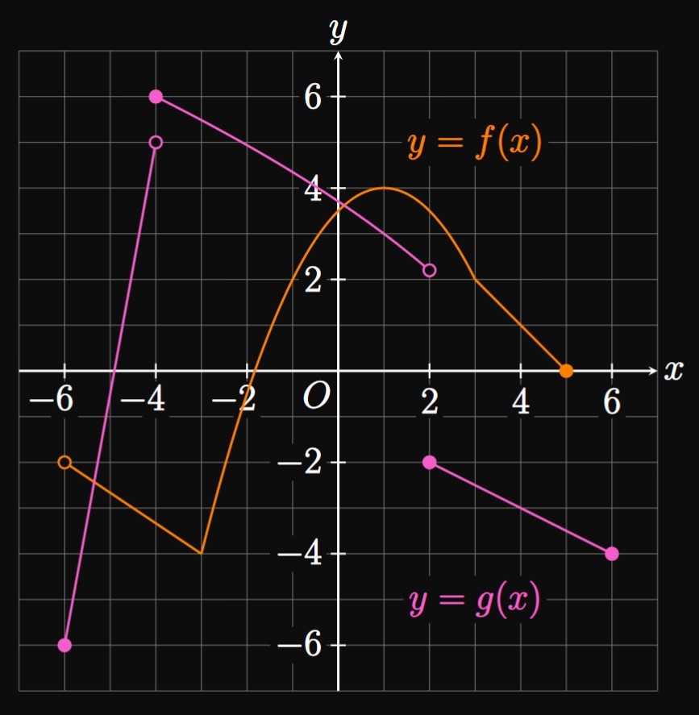
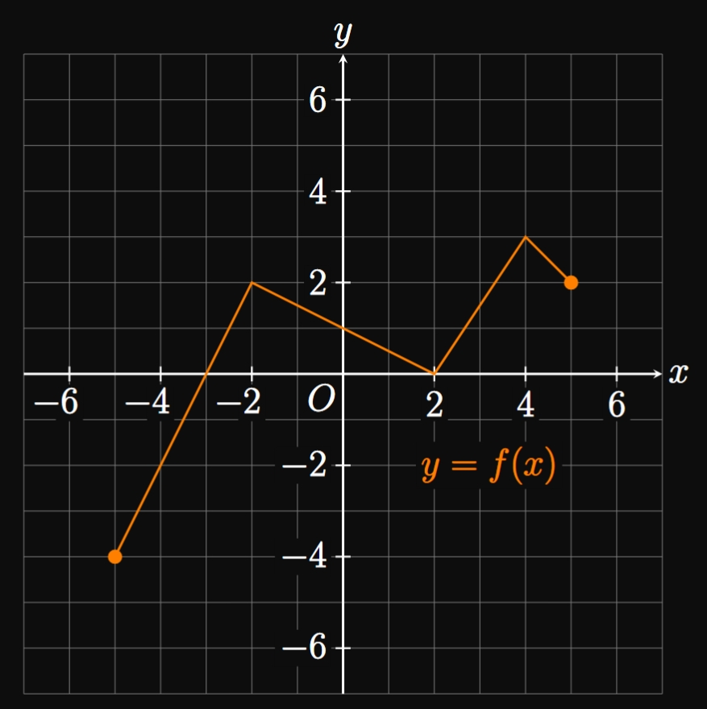
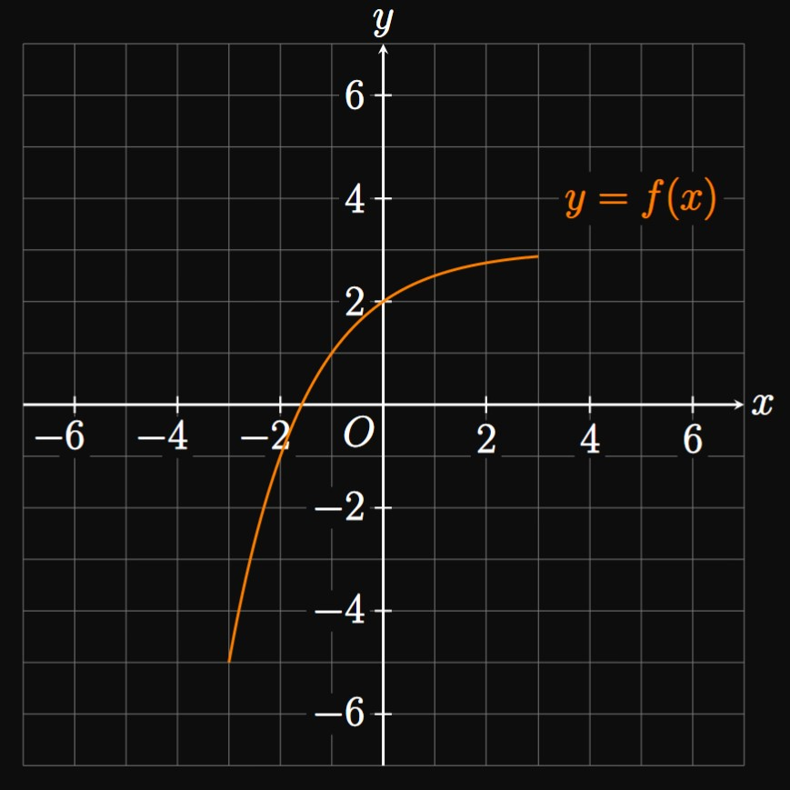
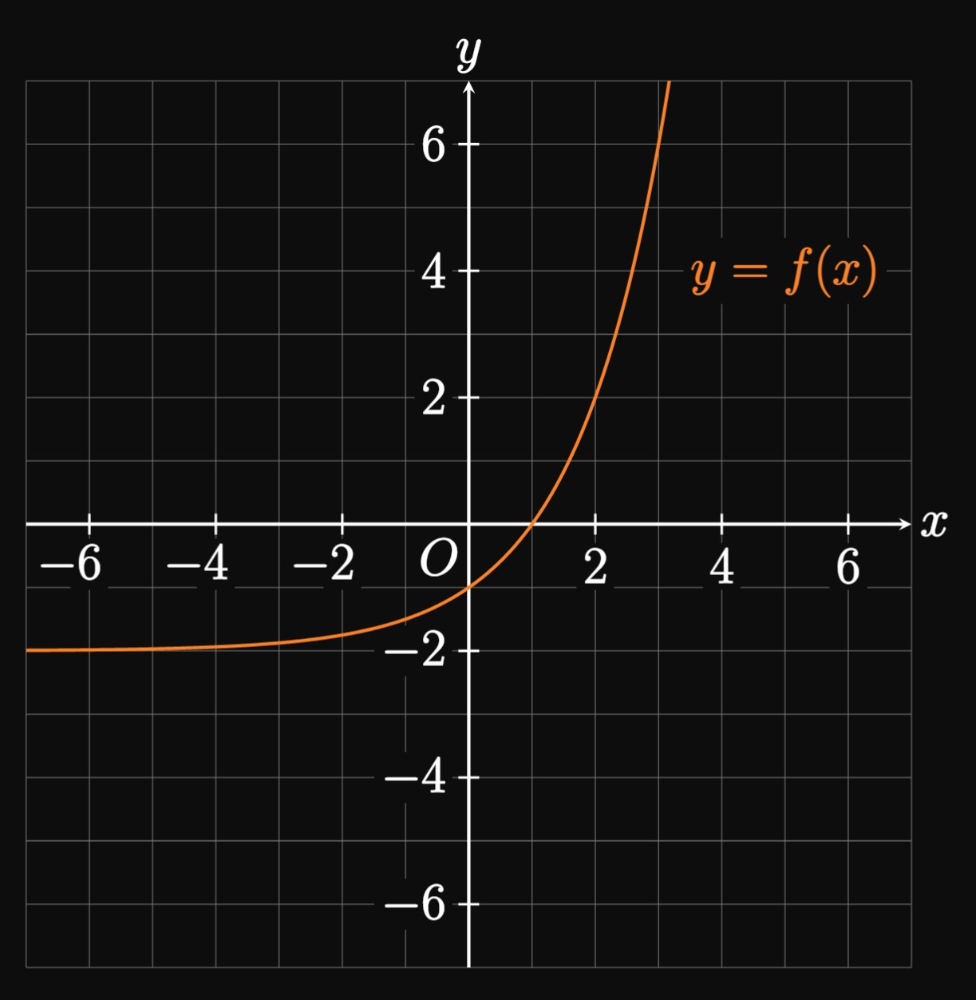

Click on a problem number to see its solution.
Define a one-to-one function .
A one-to-one function \(f\) has domain \(D\) and range \(E.\)
List three mathematical properties about its inverse function, \(\inv f.\)
Let \(f(x) = x^3 - 5x + 7\) and \(g(x) = \tfrac{1}{2} x^4 + x^2 - 4.\)
Find
\((f + g)(-2)\)
\((g - f)(-2)\)
\((fg)(-2)\)
\(\ds \par{\frac{f}{g}}(-2)\)
Let \(u(x) = \sqrt{9 - x}\) and \(v(x) = \tfrac{1}{3} x^3 - 3 x^2 - 1.\)
Calculate
\((u - v)(3)\)
\((uv)(3)\)
\(\ds \par{\frac{u}{v}} (3)\)
\(\ds \par{\frac{v}{u}} (3)\)
If \(f(x) = x^3 - x\) and \(g(x) = \sqrt{5x + 2},\)
then find \((g/f)(x)\) and its domain.
For an odd function \(g,\)
show that reflecting the graph of \(y = g(x)\) across the \(x\)-axis
yields the same graph as reflecting it across the \(y\)-axis.

The graphs of \(y = f(x)\) and \(y = g(x)\) are shown in Figure 16 .
Find \((f + g)(4)\) and \((g/f)(4).\)
Determine \((f \circ g)(4)\) and \((g \circ f)(4).\)
Let \(h(x) = f(2x - 1).\)
Find \((h \circ h)(3).\)
Is \(f\) one-to-one on \([-1, 4] \ques\)
Is \(g\) one-to-one on \([-4, 6] \ques\)
The following table shows values of the one-to-one function \(p.\)
\(x\)
\(-5\)
\(-3\)
\(2\)
\(3\)
\(p(x)\)
\(4\)
\(-2\)
\(3\)
\(-5\)
Find \(\inv p(-2)\) and \(\inv p(3).\)
What are the domain and range of \(\inv p \ques\)
Determine \((p \circ p)(2).\)
Let \(q(x) = x^3 \, p(2x).\)
Calculate \(q(1).\)

The graph of \(y = f(x)\) is shown in Figure 17 .
Graph the following functions.
\(y = f(x + 1)\)
\(y = f(x) + 3\)
\(y = 2 f(x) + 1\)
\(y = f(2x)\)
Given the graph of \(y = f(x)\) in Figure 18 ,
plot the graphs of \(y = f(x/2)\) and \(y = \tfrac{1}{2} f(x).\)

The graph of the one-to-one function \(y = f(x)\) is shown in Figure 19 .
Plot the graph of \(y = \inv f(x).\)

The graph of \(y = 1/x\) was graphed in
Example 0.4-5 .
Using this parent function,
graph each function and state its domain and range.
\(\ds y = -\frac{1}{x}\)
\(\ds y = \frac{1}{x - 3}\)
\(\ds y = \frac{1}{4x + 8} - 2\)
For each of exercises 13–19, graph the function, starting with the parent function and applying the rules of transformations.
Then state the domain and range.
\(13.\)
\(\ds y = 3 - x^2\)
\(14.\)
\(\ds y = - \abs{x - 2}\)
\(15.\)
\(\ds y = \tfrac{1}{4} x^3 - 1\)
\(16.\)
\(\ds y = \tfrac{1}{2} \sqrt{5 - x}\)
\(17.\)
\(\ds y = \frac{2}{3 - x} + 1\)
\(18.\)
\(\ds y = \sqrt[3]{-32 - 8x}\)
\(19.\)
\(\ds y = \abs{1 - x^2} - 2\)
For each of exercises 20–32, find the composite function.
\(\ds f(x) = x^4 + 3x \cmaa g(x) = 2x \scoll (f \circ g)(x)\)
\(\ds f(t) = 4t^3 \cmaa g(t) = 8 - \tfrac{1}{4} t^2 \scoll (g \circ f)(1)\)
\(\ds v(a) = 2a + 5 \scoll (v \circ v)(2)\)
\(\ds m(x) = \frac{6x + 4}{x^2 - 5x - 4} \scoll (m \circ m)(-1)\)
\(\ds p(x) = \sqrt{8 - x^2} \cmaa q(x) = 2x^4 + 5x^2 - 13 \scoll (q \circ p)(x)\)
\(\ds f(x) = \frac{2x + 5}{6 - x} \cmaa g(x) = x + 1 \scoll (f \circ g)(x)\)
\(\ds g(u) = \sqrt[3]{5u - 3} \cmaa h(u) = u^2 + 6u - 5 \scoll (g \circ h)(2)\)
\(\ds A(y) = 3^y + 4 \cmaa B(y) = 2y - 1 \scoll (A \circ B)(y)\)
\(\ds f(x) = \sqrt{\frac{x}{2} + 5} \cmaa g(x) = 2x - 4 \cmaa h(x) = x^3 \scoll (f \circ g \circ h)(x)\)
\(\ds u(x) = 2x^2 + x - 6 \cmaa v(x) = \sqrt[3]{x - 4} \cmaa w(x) = 8x + 5 \scoll (u \circ v \circ w)(x)\)
\(\ds f(t) = \sqrt{28 - t} \cmaa r(t) = \sqrt[3]{2t} \cmaa s(t) = 8t - 4 \scoll (f \circ s \circ r)(4)\)
\(\ds a(x) = \frac{1}{x - 4} \cmaa b(x) = \abs{2x - 4} \cmaa c(x) = x^3 \scoll (b \circ a \circ c)(x)\)
\(\ds C(y) = \frac{34}{y + 1} \cmaa D(y) = 4^{-y} \cmaa E(y) = \frac{12 - 6y}{y + 2} \scoll (E \circ C \circ D)(-2)\)
For each of exercises 33–36, the given function is in the form \(f \circ g.\)
Find \(f\) and \(g\).
Find functions \(f,\) \(g,\) and \(h\) such that
\[(f \circ g \circ h)(x) = \frac{4}{\sqrt[3]{8 - x}} \pd\]
Determine three functions whose composition yields
\(5^{\sqrt{12t + 17}}.\)
Functions \(f\) and \(g\) are defined by
\[f(x) = \sqrt{20 - 2x} \and g(x) = 7x - x^2 \pd\]
Find \((f \circ g)(x)\) and its domain.
For each of exercises 40–43, determine whether the two functions are inverses.
\(40.\)
\(\ds f(x) = \tfrac{1}{2} x + 4 \cmaa g(x) = 2x - 6\)
\(41.\)
\(\ds C(u) = u \cmaa D(u) = \frac{1}{u}\)
\(42.\)
\(\ds f(x) = x^3 \cmaa g(x) = \sqrt[3] x\)
\(43.\)
\(\ds A(t) = t^3 - 4 \cmaa B(t) = \sqrt[3]{t - 4}\)
For each of exercises 44–47, find the function's inverse.
\(44.\)
\(\ds f(x) = 5x - 14\)
\(45.\)
\(\ds g(x) = 9x^5 - 4\)
\(46.\)
\(\ds f(x) = \frac{4x + 4}{x - 3}\)
\(47.\)
\(\ds h(t) = \sqrt[3]{\tfrac{1}{4} t + 5}\)
Consider the linear function \(f(x) = mx + b.\)
Prove that the graph of \(y = \inv f(x)\) has slope \(1/m.\)
Is the graph of \(y = -\inv f(x)\) perpendicular to the graph of \(y = f(x) \ques\)
Is the graph of \(y = \inv f(-x)\) perpendicular to the graph of \(y = f(x) \ques\)
A circle's circumference \(C\) as a function of its radius \(r\) is given by
\(C(r) = 2 \pi r.\)
Find the function's inverse and explain its significance.
A sphere's volume \(V\) as a function of its radius \(r\) is given by
\(V(r) = \tfrac{4}{3} \pi r^3.\)
Find the function's inverse and explain its significance.
What transformations, in order, must be applied to \(y = f(x)\)
to attain the graph of \(y = -4 \inv f(x - 6) + 9 \ques\)
Describe, in order, the transformations applied to \(y = g(x)\)
to acquire the graph of \(y = \tfrac{1}{3} \inv g(4 - 2x) - 7.\)